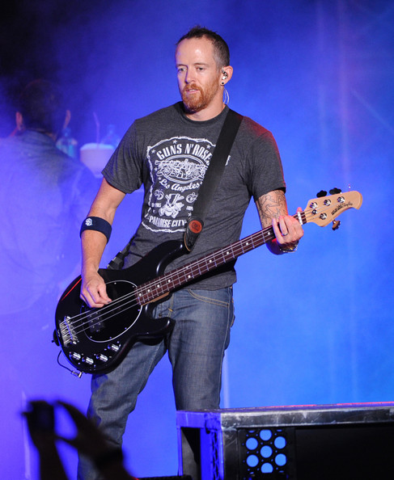

|Dave Farrell|
David Michael "Phoenix" Farrell (nato 8 febbraio 1977) è un musicista americano, meglio conosciuto come il bassista della roccia banda di Linkin Park . Era anche un membro di Tasty Snax, una rock band cristiana e ska .
A Farrell è stato insegnato come suonare la chitarra da sua madre quando era al liceo. È cresciuto a Plymouth, ma in seguito si è trasferito a Mission Viejo , in California , all'età di 5 anni.
Quando Hybrid Theory è stato firmato per la Warner e diventato Linkin Park, Brad Delson ha assunto le credenziali per il basso per il loro album di debutto, anche se Farrell è stato accreditato nell'album come bassista. Farrell tornò alla line-up nel 2000 dopo circa un anno e mezzo di assenza in tour con Tasty Snax. È stato con la band da allora.